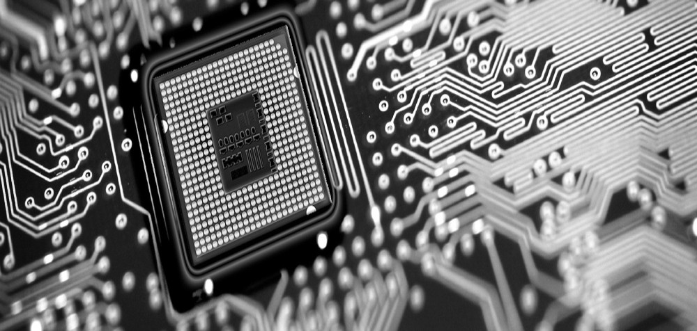

<!--
  Generated template for the MontagesPage page.

  See http://ionicframework.com/docs/components/#navigation for more info on
  Ionic pages and navigation.
-->
<ion-header>

  <ion-navbar>
    <ion-title>Montage</ion-title>
	  
  </ion-navbar>

</ion-header>


<ion-content padding class="bg-style no-scroll">
	<ion-grid>
  
	<ion-row>
    <ion-col>
		
		
		<h3 text-center> Vous souhaitez monter un nouvel ordinateur ou faire évoluer celui que vous possédez ?  </h3> <br>
	<p> Nous pouvons le monter pour vous ou vous conseiller de nouveaux composants et amélioration possible. </p>
	</ion-col>
  </ion-row>
	
		
		<ion-row>
    <ion-col>
		
		<button class="button" ion-button block large round (click)="goToOtherPage()" [hidden]="this.hiddenConnexion()"> Se connecter</button>
		<button class="button" ion-button block large round (click)="goToOtherPageRD()" [hidden]="this.hiddenRD()"> Prendre rendez-vous </button>
	</ion-col>
  </ion-row>
		
	</ion-grid>
</ion-content>
